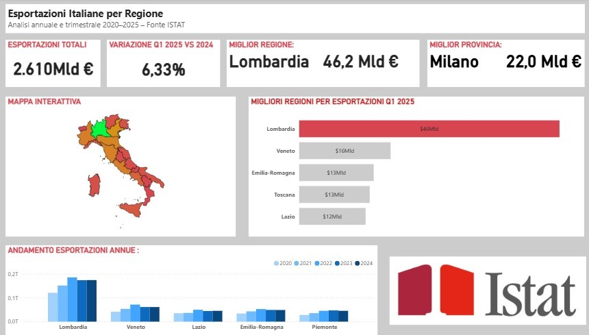

Andamento e confronto regionale
In questo progetto ho creato una pagina per analizzare l'andamento delle esportazioni italiane, con focus sulle singole regioni, al fine di analizzare le variazioni e classificare le migliori regioni esportatrici.
Dall’analisi emerge come le esportazioni italiane siano in crescita. Le cinque principali regioni esportatrici sono, nell’ordine: Lombardia, Veneto, Emilia-Romagna, Toscana e Lazio. La Lombardia si conferma nettamente al primo posto, trainata in particolare dal suo capoluogo, Milano. Dalla mappa interattiva risulta evidente che, al di fuori di queste cinque regioni, il livello delle esportazioni è significativamente più basso. Infine, osservando il grafico a barre verticali, si nota come tutte le cinque regioni registrino un picco delle esportazioni nel 2022, fenomeno spiegabile con la fine delle restrizioni legate al Covid-19.
